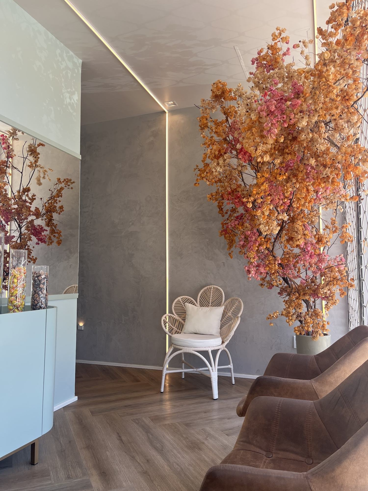
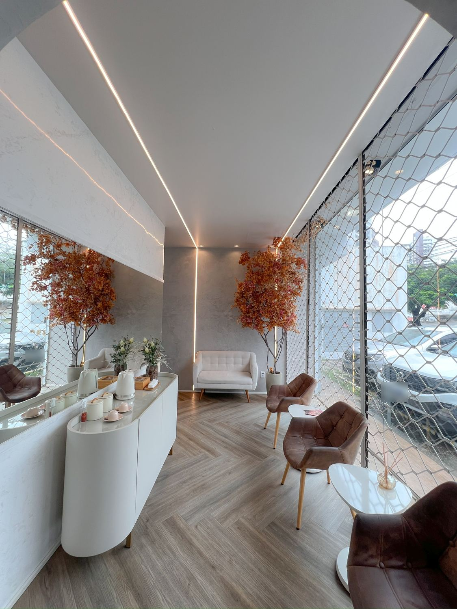
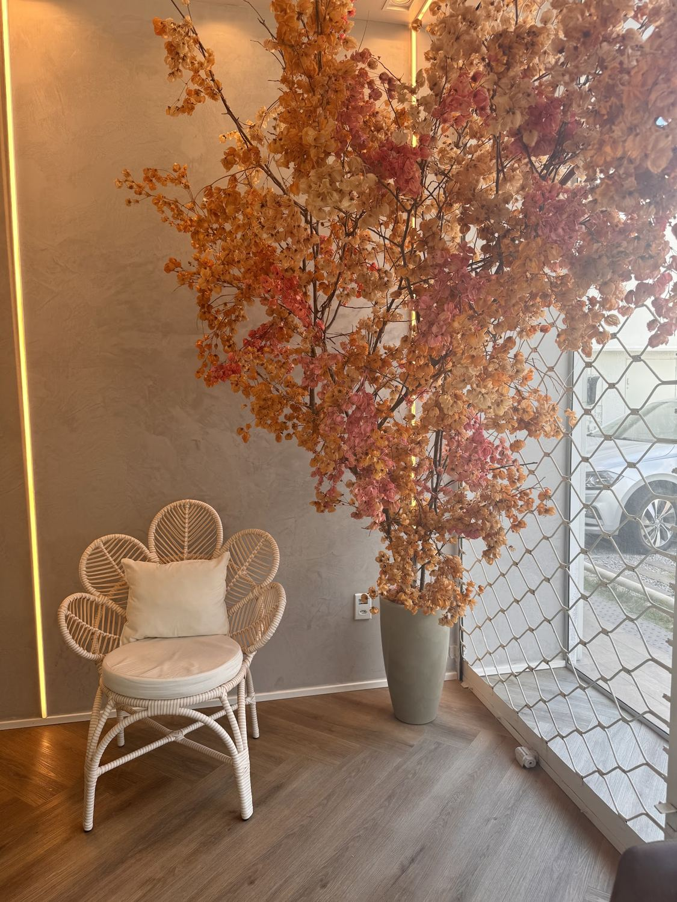
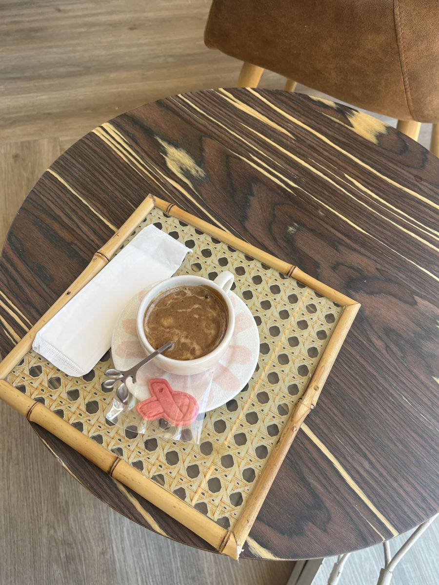
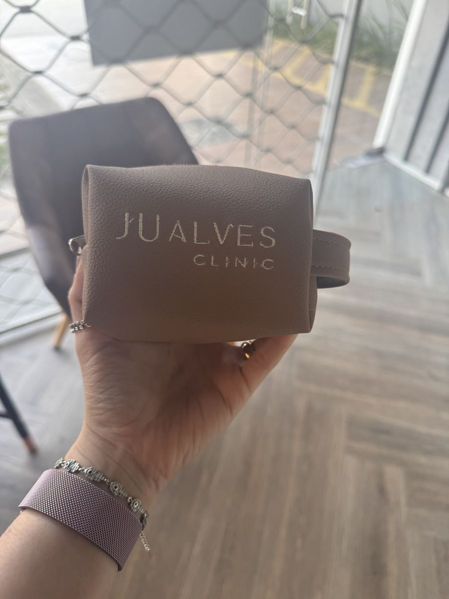
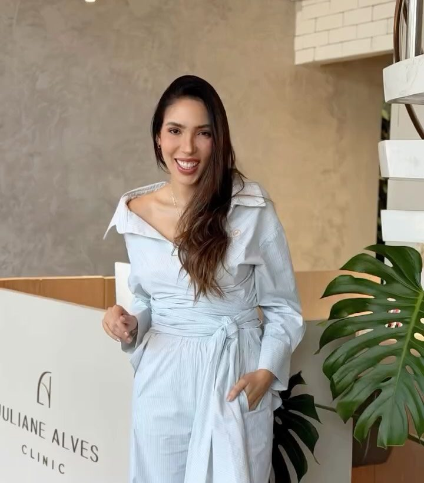

Unic Fios
SobrancelhasTécnica da casa pra sobrancelhas, trabalhada em fios delicados.

Sobrancelhas, cílios, nanopigmentação, harmonização facial e exossomos, na Galeria Jardins Petrópolis.
É assim que a Juliane Alves Clinic fala do próprio trabalho: estética minimalista e humanizada, que valoriza o que já é seu e mantém a naturalidade.
Frases do Instagram da clínicaToque no procedimento pra já deixar o pedido de agendamento pronto.
Valores, duração e indicação de cada procedimento a confirmar
Técnica da casa pra sobrancelhas, trabalhada em fios delicados.
Lifting que curva e realinha os próprios cílios, sem extensão.
Madeira, luz embutida e as árvores de folhas laranja. É o salão da Galeria Jardins Petrópolis, com café servido na espera.




Av. Hermes da Fonseca, 390, loja 03 · Galeria Jardins Petrópolis · Natal/RN

“Quem faz tudo isso acontecer.”
É assim que a clínica apresenta a Juliane, que dá nome à casa. A clínica também organiza o Únicas, que teve uma edição especial no Outubro Rosa.
Formação e registro profissional a confirmar
“Excelente qualidade no serviço. Atendimento impecável, organização desde a marcação dos serviços, sempre sou muito bem recepcionada. […] Recomendo!”
“Ju é a melhor de Natal. Espaço lindo, aconchegante, com profissionais de excelência. Sou cliente há muitos anos […] Recomendo.”
“Melhor lugar de autocuidado e estética da cidade. Compromisso com o horário, atendimento muito bom, nunca me deixam na mão. Mesmo morando fora da cidade faço questão que só elas façam minha sobrancelha […]”
A mensagem já sai pronta pro WhatsApp da clínica. O horário é confirmado por lá.